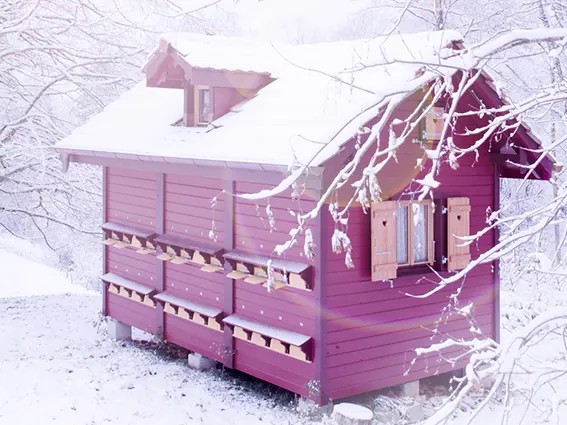
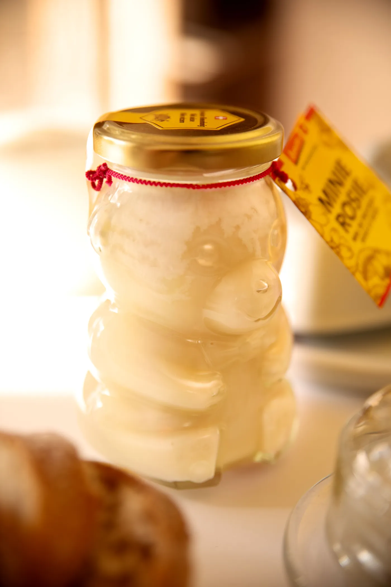
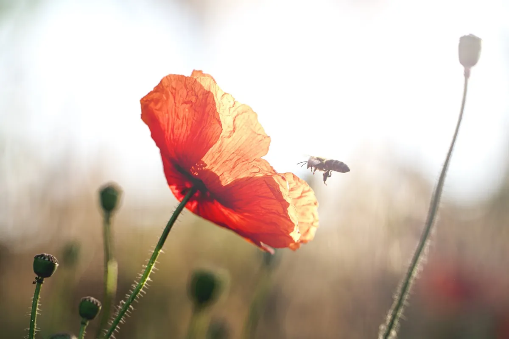
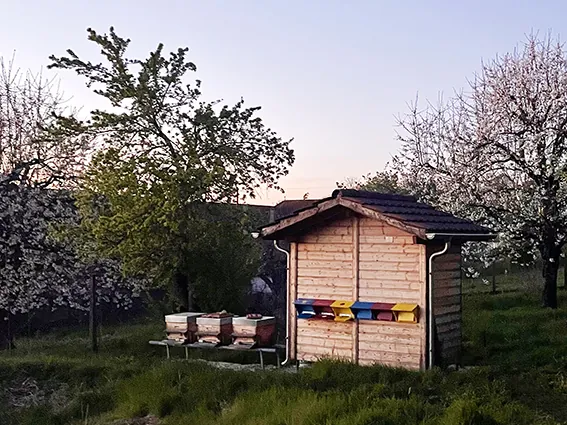
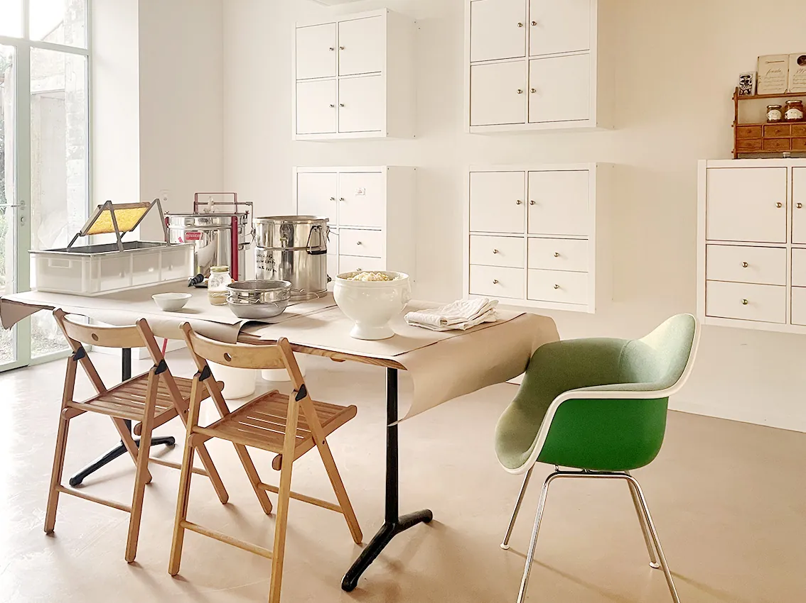
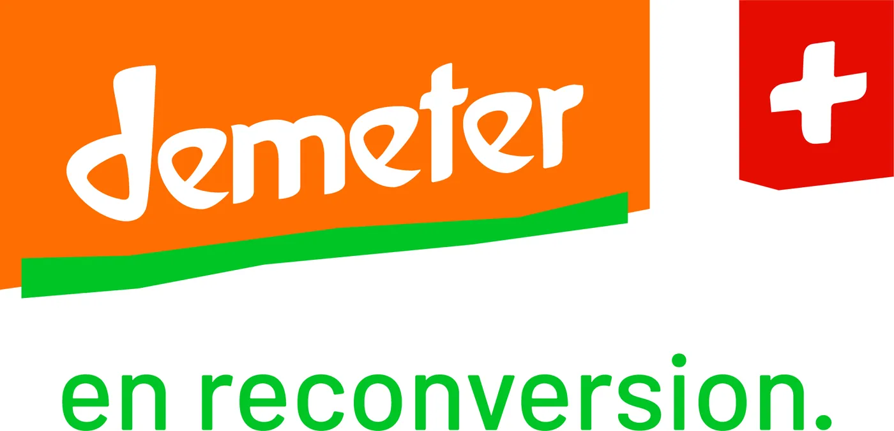
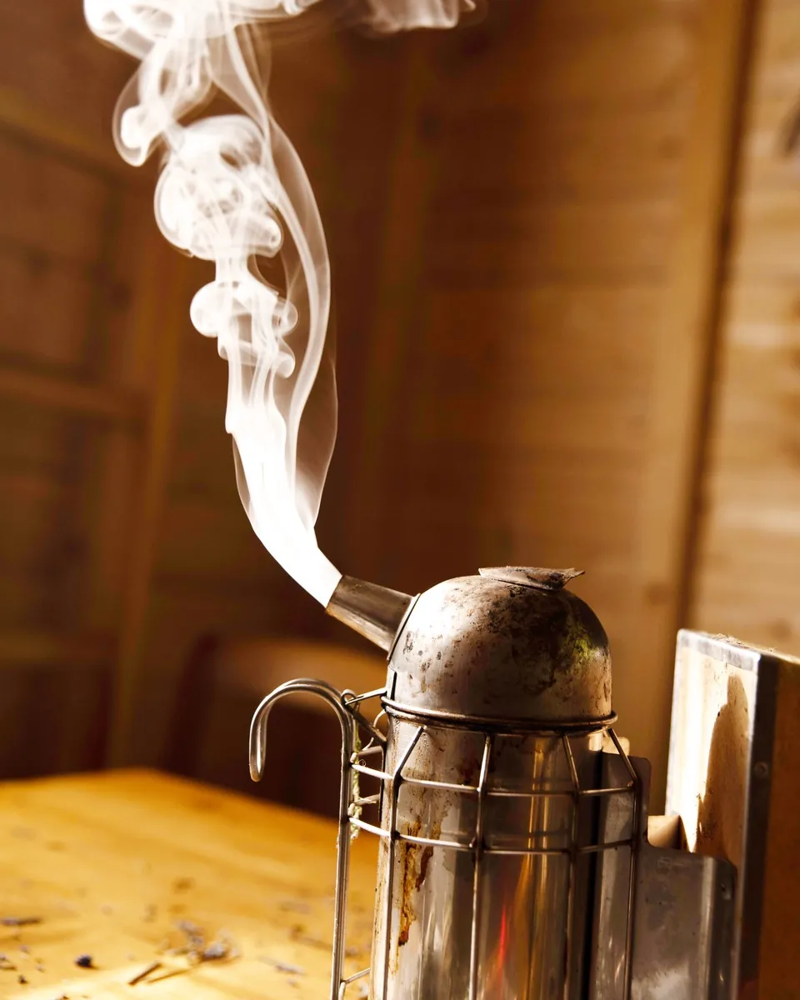
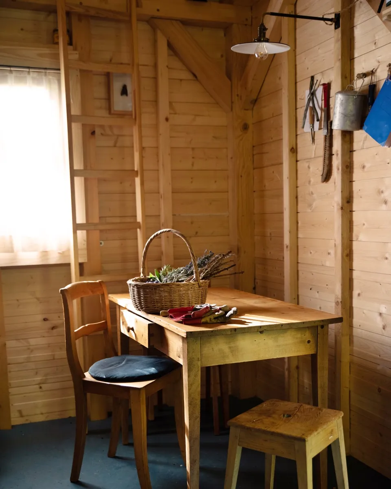
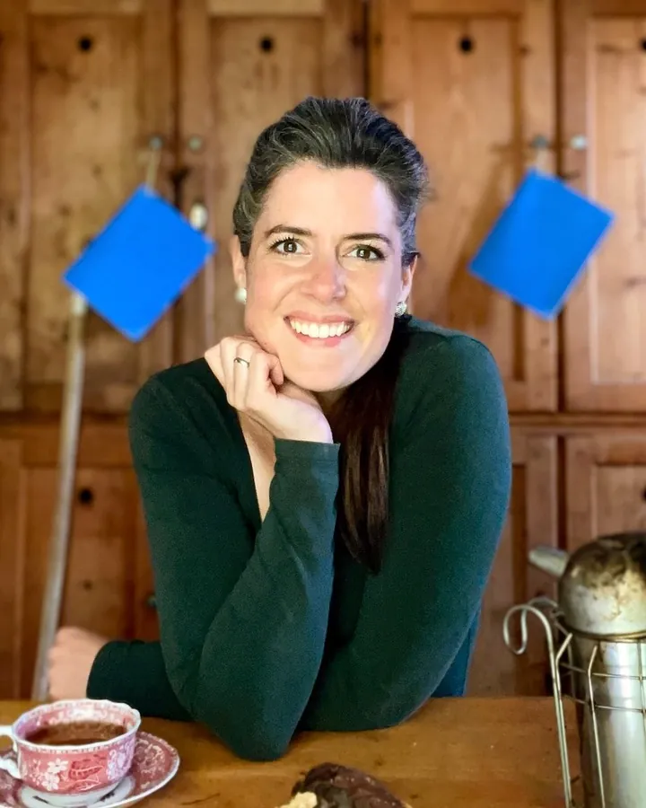

Roche-d'Or
Le Rucher Rosie
Un ancien rucher pavillon Bürki, rénové en 2025 avec des méthodes anciennes de construction. Entre prairie et forêt protégée, loin du tumulte.
Cours d'apiculture · Jura
Rosie Blanche, apicultrice à Roche-d'Or, fait évoluer l'apiculture vers plus de respect pour les abeilles, et vous emmène au rucher le temps d'un cours.


Au rucher
« Chaque journée au rucher est un moment unique : le pic noir chante, et sous le tilleul la brise apporte de la fraîcheur aux chaudes journées d'été. »
Après avoir enfilé la combinaison, on ouvre une ruche et on goûte le miel encore chaud à même le cadre. Se mettre au service de ses abeilles, c'est une façon d'habiter le monde.
Tout est organisé pour que votre cours soit à la fois un moment d'apprentissage et de détente.

Un ancien rucher pavillon Bürki, rénové en 2025 avec des méthodes anciennes de construction. Entre prairie et forêt protégée, loin du tumulte.

Un petit rucher Bürki ouvert de 6 ruches Bürki et 3 Dadant, dans un verger villageois, avec un jardinet de plantes médicinales pour le soin des abeilles.

Attenante au verger, dans une ancienne ferme rénovée en 2025 : un espace pratique, chaleureux et inspirant.
Garantie de qualité
Une apiculture exigeante, qui respecte profondément les abeilles et porte attention à tout ce qui les entoure.




Plus de 10 ans d'apiculture, en formation pour le brevet fédéral suisse. Vulgarisatrice pour la section apicole de sa région, formée pour enseigner auprès de la Société Romande d'Apiculture. Photographe HES et auteure aux éditions Favre.
Elle cultive et transforme ses plantes médicinales dans sa petite ferme La Rochette. Herbe sauvage ou rose cultivée : les plantes sont son domaine.
Pour toute information ou pour réserver un cours, écrivez à Rosie : réponse dans les plus brefs délais.